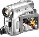
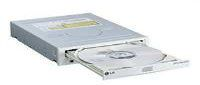
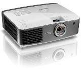
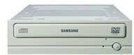
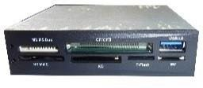
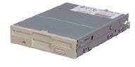
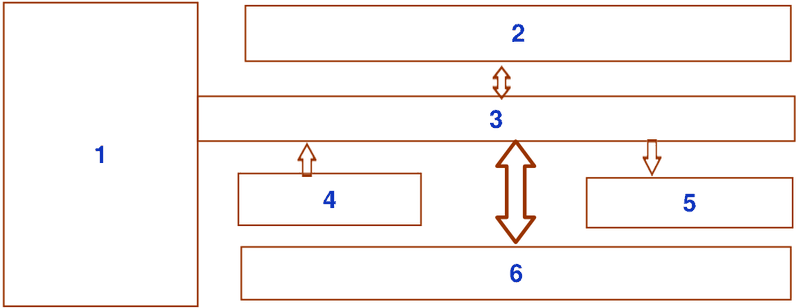
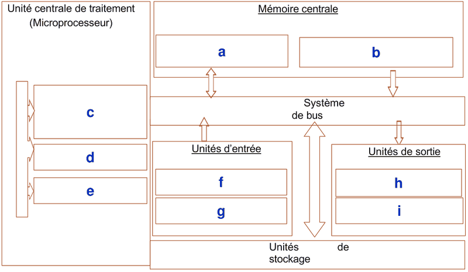

Chapitre 2 : Exercices
Module 1 : Généralités sur les systèmes informatiques
Exercice 1 : Identifier les périphériques
Pour chacune des 16 images, donner le nom du périphérique et son type.
Image 1
Nom : …………………… Type (entrée / sortie / entrée-sortie) : ……………………
Afficher la correction
Clavier (entrée)
Image 2
Nom : …………………… Type (entrée / sortie / entrée-sortie) : ……………………
Afficher la correction
Scanner (entrée)
Image 3
Nom : …………………… Type (entrée / sortie / entrée-sortie) : ……………………
Afficher la correction
Webcam (entrée)
Image 4
Nom : …………………… Type (entrée / sortie / entrée-sortie) : ……………………
Afficher la correction
Souris (entrée)
Image 5
Nom : …………………… Type (entrée / sortie / entrée-sortie) : ……………………
Afficher la correction
Microphone (entrée)
Image 6

Nom : …………………… Type (entrée / sortie / entrée-sortie) : ……………………
Afficher la correction
Caméscope (entrée)
Image 7
Nom : …………………… Type (entrée / sortie / entrée-sortie) : ……………………
Afficher la correction
Appareil photo numérique (entrée)
Image 8

Nom : …………………… Type (entrée / sortie / entrée-sortie) : ……………………
Afficher la correction
Lecteur CD/DVD (entrée)
Image 9
Nom : …………………… Type (entrée / sortie / entrée-sortie) : ……………………
Afficher la correction
Écran (sortie)
Image 10
Nom : …………………… Type (entrée / sortie / entrée-sortie) : ……………………
Afficher la correction
Haut-parleurs (sortie)
Image 11
Nom : …………………… Type (entrée / sortie / entrée-sortie) : ……………………
Afficher la correction
Imprimante (sortie)
Image 12

Nom : …………………… Type (entrée / sortie / entrée-sortie) : ……………………
Afficher la correction
Vidéoprojecteur (sortie)
Image 13
Nom : …………………… Type (entrée / sortie / entrée-sortie) : ……………………
Afficher la correction
Modem/routeur (entrée-sortie)
Image 14

Nom : …………………… Type (entrée / sortie / entrée-sortie) : ……………………
Afficher la correction
Graveur DVD (entrée-sortie)
Image 15

Nom : …………………… Type (entrée / sortie / entrée-sortie) : ……………………
Afficher la correction
Lecteur de cartes mémoire (entrée-sortie)
Image 16

Nom : …………………… Type (entrée / sortie / entrée-sortie) : ……………………
Afficher la correction
Lecteur de disquettes (entrée-sortie)
Exercice 2 : Compléter le schéma fonctionnel d'un ordinateur
Nommer les 6 cases numérotées du schéma fonctionnel d'un ordinateur :
- La grande case à gauche : ……………………
- La case du haut : ……………………
- La barre du milieu : ……………………
- La case en bas à gauche : ……………………
- La case en bas à droite : ……………………
- La case du bas : ……………………

Afficher la correction
- Unité centrale de traitement (microprocesseur)
- Mémoire centrale
- Système de bus
- Unités d'entrée
- Unités de sortie
- Unités de stockage
Exercice 3 : Compléter le schéma du Résumé
Compléter les cases du schéma du Résumé :
- a) mémoire en lecture/écriture : ……………………
- b) mémoire en lecture seule : ……………………
- c, d, e) les trois éléments du CPU : ……………………
- f, g) deux exemples d'unités d'entrée : ……………………
- h, i) deux exemples d'unités de sortie : ……………………

Afficher la correction
- a) RAM
- b) ROM
- c, d, e) UAL, UC, Registres (ordre libre)
- f, g) par exemple : clavier, souris (tout exemple valable)
- h, i) par exemple : écran, imprimante (tout exemple valable)